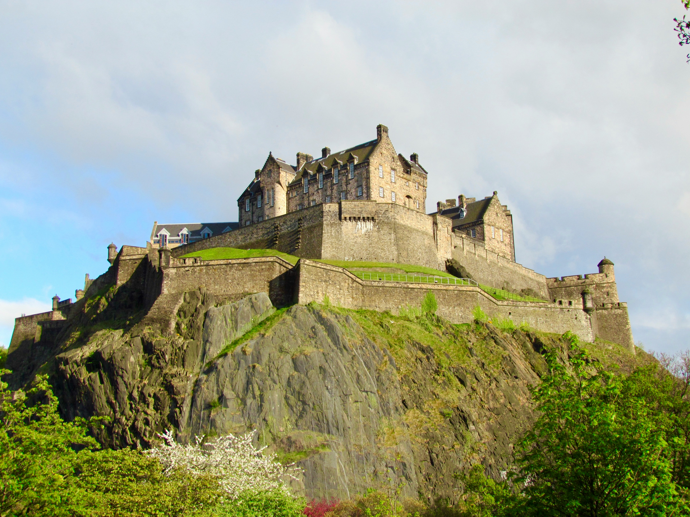
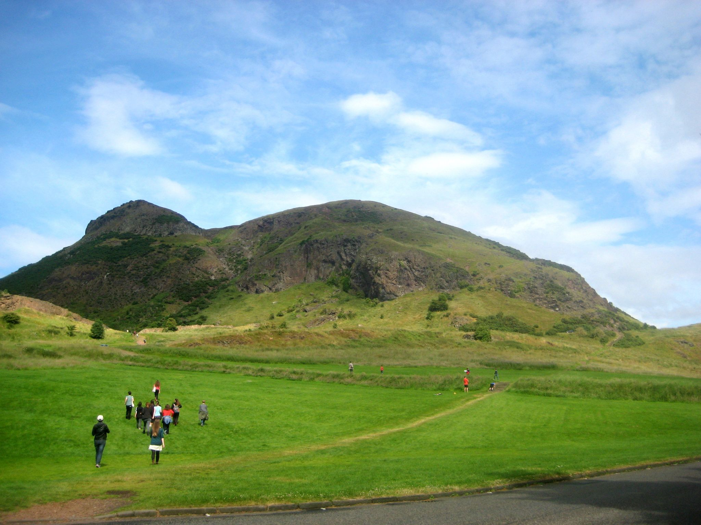

Tours
Choose one of our self-guided walking tours below via the header:
Old Town Tour
Explore Edinburgh's historic Old Town: Edinburgh Castle, Royal Mile, St Giles Cathedral, Greyfriars Kirkyard, Holyrood.

Edinburgh Castle
7 Hills of Edinburgh
A challenging walk to all seven historic hills:

Arthur's Seat